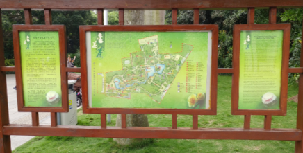

Nanning 南宁
The capital city of Guangxi Province in the South-west corner of China and has a border with Vietnam where you will find Detian Waterfall (德天瀑布 [Détiān Pùbù]) in Daxin County Guangxi Province. Nanning is the center of the Zhuang minority culture, and its population is more than 63% Zhuang.
The city is also known as the Green City, due to an abundance of lush tropical foliage. Nanning has many Parks, one of which is Nanhu Park located in the South East of Nanning city.
The Hibiscus - Zhūjǐn in the picture on the right is the Nanning City Flower. It also has a pink variety.
Nanning City Flower - Hibiscus - Zhūjǐn - 朱槿
Getting to Nanning and China from the UK.
Having travelled to China and Nanning on several occasions we have flown from Manchester Airport and Leeds Bradford Airport. Travelling from Manchester has usually meant flying to Amsterdam then onto Beijing or Guangzhou then to Nanning, travelling time around 24 hours including taxis and airport waiting times.
The travel sites we have used are Skyscanner which usually gives KLM and China Southern as the airlines or Kayak which has given Air France as the main carrier.
On this site you can find information about Chinese Festivals, Travel Advice for China, Hong Kong and Macao, and Visa information the three main types for tourists or visiting family.
We also have links to the British and Chinese consulates in the UK and China at the bottom of the page.
Golden Camellia Park - Nanning
One of the many parks to visit during the cooler part of the year in Nanning, is November to April is the Golden Camellia Park which is also the best time to view the camellias.
There are 8,160 camellias comprised of 302 camellia species which includes yello camellias, Camellia Japonica, C. oleifera and C. sasanqua. Entry is free seven days a week the park is situated at, No. 3-5 Gecun Road Nanning.
Map of Golden Camellia Tea Park - Nanning